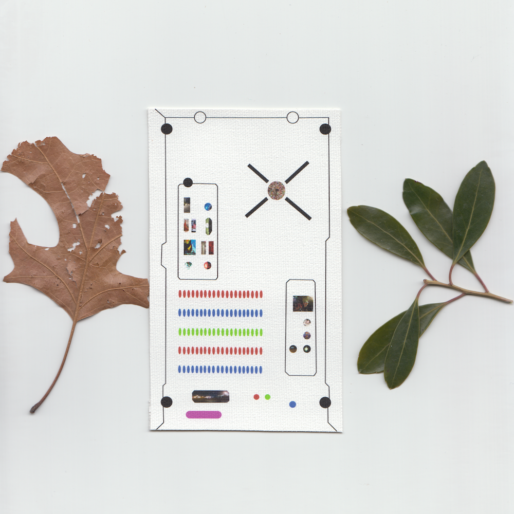
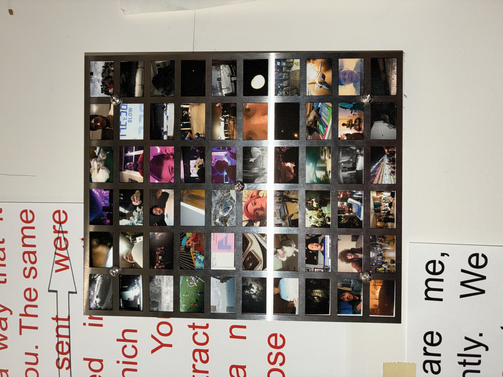
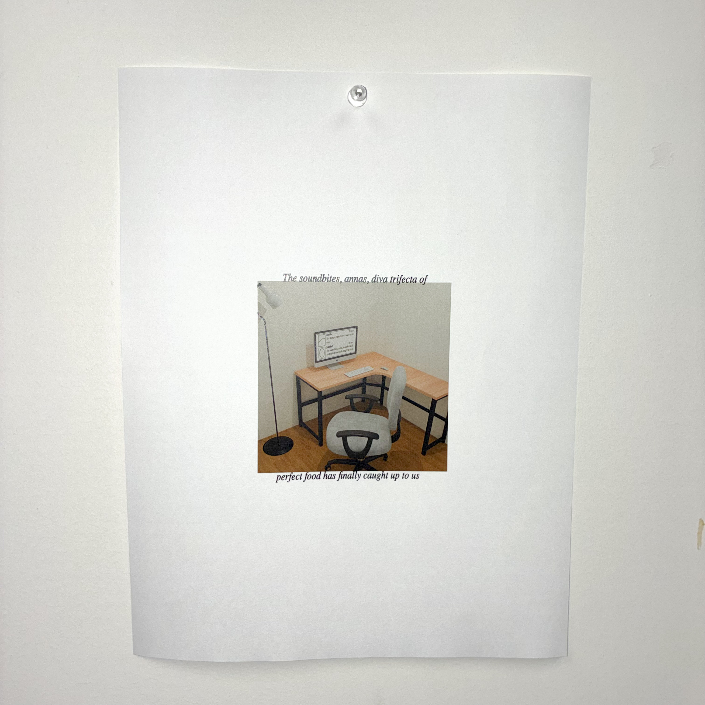

![In July 2025, a computer program called GPUHammer was able to flip bits on Nvidia chips, decreasing an AI model's accuracy from 80% to less than 1%. A long term patch was quickly implemented. The fix introduced up to a 10% slowdown and reduced memory capacity by 6.25%. The company’s 4.6 trillion valuation was unaffected, continuing to climb in spite of the vulnerability. Greco-Roman curse tablets are artifacts from a centuries-long practice of inscribing a plea (often on a piece of metal) to a higher power to deliver justice.](photos/curse_tablet.gif)


I am an artist-researcher, writer, and engineer. I am a fellow and student at MIT's Art, Culture, and Technology department. My design and commercial work (although the line between disciplines is often blurry) is done through Absent Rook Hypermedia. I am accessible on Are.na, Instagram, and at will@willallstetter.com.


